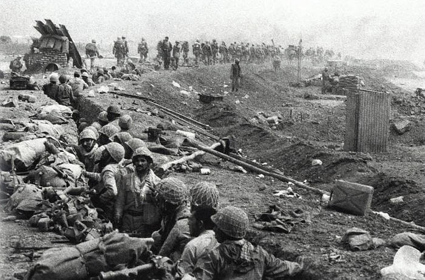
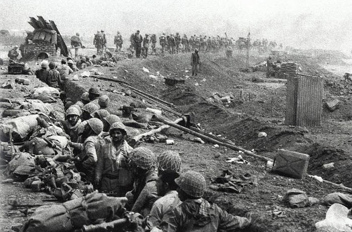
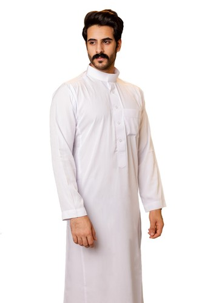
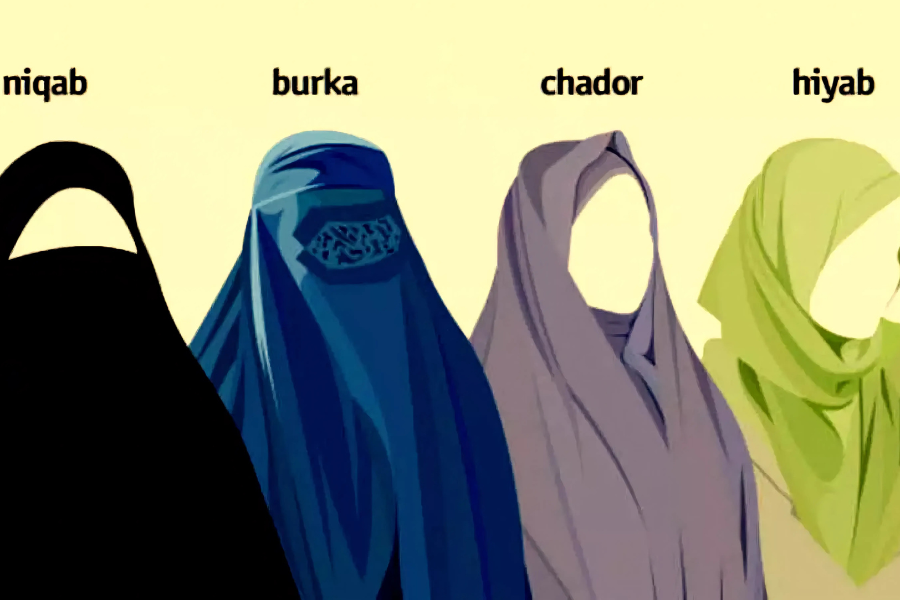

Dishdasha
La Dishdasha es una prenda tradicional masculina que forma parte esencial de la identidad cultural de Irak y de muchos países árabes del Golfo. Esta túnica larga, que cubre desde los hombros hasta los tobillos, se caracteriza por su corte recto y suelto, lo que proporciona frescura y comodidad en los climas áridos y calurosos que predominan en la región. En Irak, su uso no se limita a contextos religiosos o festivos, sino que también es común en la vida diaria, especialmente entre hombres adultos y mayores, y en las zonas rurales donde la tradición se mantiene con más fuerza. Generalmente confeccionada en telas ligeras como algodón o lino, la Dishdasha suele ser de color blanco, ya que este tono refleja el calor del sol y ayuda a mantener una temperatura corporal más fresca. Sin embargo, en estaciones más frías o durante ocasiones formales, pueden encontrarse dishdashas en tonos grises, marrones, azules oscuros o incluso negros. El cuello puede ser redondo o en forma de "V", y algunos modelos incluyen botones decorativos o bolsillos discretos en el pecho o los laterales. Este tipo de vestimenta no solo cumple una función práctica, sino que también representa un fuerte vínculo con las tradiciones islámicas y los valores de modestia y sencillez. En ocasiones formales o religiosas, la Dishdasha se complementa con el keffiyeh o shemagh, un pañuelo que se coloca sobre la cabeza, y el iqal, un cordón negro que lo sostiene en su lugar. Esta combinación completa el atuendo clásico y refuerza el orgullo por la herencia cultural iraquí. A pesar de la modernización y la influencia de la ropa occidental en las grandes ciudades, la Dishdasha sigue siendo un símbolo de respeto, dignidad y continuidad cultural. Para muchos, vestirla es también una forma de expresar identidad nacional y de rendir homenaje a generaciones pasadas que la han usado durante siglos.

Abaya masculina
La abaya masculina, también conocida en muchos países árabes como dishdasha, thobe o jalabiya, es una prenda tradicional larga que cubre el cuerpo desde los hombros hasta los tobillos, usada principalmente por hombres en países del Golfo, como Arabia Saudita, Kuwait, Emiratos Árabes Unidos y también en regiones de Irak y Siria. Aunque el término abaya suele asociarse más comúnmente con la vestimenta femenina, en contextos específicos también se utiliza para describir variantes de túnicas masculinas sueltas y elegantes que reflejan modestia, prestigio y pertenencia cultural. Estas prendas son generalmente de colores sobrios, predominando el blanco para el uso cotidiano en climas cálidos y el negro, gris o azul oscuro para ocasiones formales o durante los meses más fríos. Su confección suele realizarse con tejidos ligeros como algodón, lino o mezclas sintéticas que favorecen la ventilación en climas desérticos. La abaya masculina no solo cumple una función práctica frente al calor, sino que también tiene un importante valor simbólico y religioso, ya que representa modestia, limpieza y respeto por la tradición islámica. En muchos casos, se combina con accesorios distintivos como el ghutra o keffiyeh (pañuelo para la cabeza) y el agal (cordón negro que lo sostiene), completando un atuendo que ha perdurado a lo largo de generaciones como un emblema de identidad y orgullo cultural árabe.

Thobe o Jalabiya
El thobe (también escrito thawb) y la jalabiya (o galabiya) son dos prendas tradicionales masculinas muy similares en apariencia, pero que varían ligeramente en estilo, uso y origen regional dentro del mundo árabe e islámico. Ambas son túnicas largas que cubren desde los hombros hasta los tobillos y están diseñadas para brindar comodidad y modestia en climas cálidos, pero su historia y detalles reflejan diferencias culturales sutiles. El thobe es típico de los países del Golfo, como Arabia Saudita, Catar, Emiratos Árabes Unidos y Kuwait. Su diseño es más ajustado, con costuras más formales, cuello alzado y a menudo botones en el pecho, lo que le da una apariencia elegante y sobria. Es comúnmente blanco, aunque en invierno se puede ver en tonos oscuros como gris o marrón. El thobe suele usarse tanto en contextos cotidianos como en ceremonias religiosas y eventos oficiales, reflejando estatus y respeto por las tradiciones islámicas. La jalabiya, por otro lado, tiene raíces más fuertes en Egipto, Sudán y partes del Levante. Su diseño es más suelto, sin cuello estructurado, y puede ser más colorido, dependiendo del contexto. En comparación con el thobe, la jalabiya tiende a ser más relajada y cómoda, usada comúnmente en ambientes domésticos o informales. En algunas regiones rurales, los hombres también la usan como ropa de trabajo ligera. En resumen, aunque el thobe y la jalabiya cumplen funciones similares y pueden parecer iguales a simple vista, representan expresiones culturales distintas: el thobe, más estructurado y formal, se asocia con el Golfo Árabe, mientras que la jalabiya, más suelta y tradicionalmente colorida, es representativa del Nilo y otras partes del norte de África y el Levante.

Niqab o chador
El niqab y el chador son prendas tradicionales utilizadas por algunas mujeres en Irak, y aunque ambas están vinculadas con la modestia y la práctica del islam, representan diferentes estilos de cobertura y tienen orígenes culturales distintos. El niqab es un velo que cubre por completo el rostro, dejando solo los ojos al descubierto, y se usa generalmente junto con una abaya (una túnica negra que cubre el cuerpo) u otras prendas largas. Esta vestimenta es común en zonas de Irak donde predomina una interpretación más conservadora de la religión, especialmente en regiones rurales o dentro de comunidades profundamente religiosas. El niqab suele ser de color negro, aunque también existen versiones en tonos oscuros o con detalles decorativos mínimos. Su función no es únicamente estética o tradicional, sino que representa una expresión de fe, pudor y una identidad religiosa centrada en el respeto hacia los valores islámicos de recato. Por otro lado, el chador es una prenda más asociada con las mujeres chiitas, especialmente influenciada por la tradición iraní, pero también utilizada en algunas regiones del sur de Irak donde la población chiita es numerosa. El chador consiste en un gran manto semicircular que cubre completamente el cuerpo desde la cabeza hasta los pies, pero, a diferencia del niqab, no cubre el rostro. Se sostiene con las manos o se sujeta ligeramente bajo el mentón, y debajo se suele llevar un hijab o velo que cubre el cabello. El chador se asocia fuertemente con la religiosidad, la espiritualidad y la participación en actividades como la oración o las visitas a lugares sagrados, como los santuarios chiitas de Karbala y Najaf, donde es común ver a muchas mujeres usándolo como muestra de respeto y devoción. Ambas prendas, aunque diferentes en forma y nivel de cobertura, son expresiones culturales y religiosas profundas que forman parte de la vida de muchas mujeres en Irak. Su uso puede estar influenciado por factores como la región geográfica, la tradición familiar, la identidad religiosa, la edad y la ocasión. Para algunas mujeres, llevar el niqab o el chador es una elección personal cargada de significado espiritual; para otras, es una costumbre heredada que mantiene viva la conexión con sus raíces. En cualquier caso, estas vestimentas siguen siendo símbolos visibles de una rica tradición cultural que ha perdurado a lo largo del tiempo en el corazón del mundo árabe.
Irak es un país de gran diversidad lingüística, reflejo de su compleja historia y su rica mezcla de pueblos y culturas. Aunque los idiomas oficiales son el árabe y el kurdo, en diferentes regiones del país se hablan muchas otras lenguas minoritarias. El árabe es el idioma predominante y el más hablado en todo el territorio nacional, especialmente en las regiones centrales y del sur. Es la lengua utilizada por el gobierno, la educación pública, los medios de comunicación nacionales y la vida cotidiana de la mayoría de la población. Sin embargo, el árabe que se habla en Irak tiene particularidades propias, con varios dialectos regionales como el árabe iraquí, distinto al que se habla en otros países árabes. El kurdo, por su parte, es la lengua principal en la región autónoma del Kurdistán iraquí, en el norte del país, donde también es lengua oficial. Dentro del kurdo existen dos grandes dialectos: sorani, que es el más hablado en Irak, y kurmanji, más común en países vecinos como Turquía y Siria. El kurdo es utilizado ampliamente en la administración regional, en escuelas y universidades kurdas, así como en medios de comunicación locales. Además de estas lenguas oficiales, existen comunidades que hablan idiomas minoritarios, profundamente arraigados en la historia cultural y religiosa del país. Entre ellos se encuentra el turcomano, una variante del turco hablada por la comunidad turcomana, principalmente en ciudades del norte como Kirkuk y Tal Afar. Otra lengua importante es el asirío o neoarameo, hablado por cristianos asirios y caldeos que viven en zonas como Nínive, Dohuk o Alqosh. Este idioma tiene un valor histórico especial, ya que proviene del antiguo arameo, la lengua que se hablaba en la antigua Mesopotamia y que incluso, según la tradición, fue hablada por Jesucristo. También se habla armenio en pequeñas comunidades, sobre todo en ciudades como Bagdad y Basora, donde hay presencia histórica de armenios. Otras lenguas, como el persa, pueden encontrarse en comunidades cercanas a la frontera con Irán, especialmente entre peregrinos, comerciantes o religiosos chiitas. Existen además idiomas menos conocidos como el domari, hablado por algunos grupos gitanos, y variantes del arameo moderno empleadas en contextos litúrgicos o familiares. En conjunto, esta diversidad lingüística convierte a Irak en un país multicultural donde conviven múltiples lenguas, muchas de ellas con raíces milenarias. A pesar de los conflictos y tensiones históricas, estas lenguas representan la riqueza cultural de un territorio que fue cuna de las civilizaciones más antiguas del mundo.